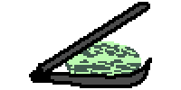

Hey, howdy, hi! Welcome to my personal fun and portfolio website. The name's Squishy. I like to make things and tell stories through drawing, writing, and video games. If you're looking for the thoughts and projects of a part time goofball and full time dork, you're in the right place. Please feel free to take a look around, because I'm always working on something new!


1-1-26
8-8-26
Have you ever found yourself surrounded by calendars, to do lists, sticky notes,
alarms set on your smart phone to remind you to take your medicine, that doctor's
appointment you thought was next week, to eat that cottage cheese before it goes bad...
I suppose all brains work differently. I'd imagine most people probably would fall in
one of two camps; you either just wing it and hope you do everything you want and need to
do, or you are so good at reminding yourself of things that there's even backup plans for
the backup plans to make sure there's absolutely no way you will forget to do the thing.
Personally, I have grown into the latter category. In both healthy and unhealthy ways.
I keep a calendar for work and appointments, then another one beside the first for chores
and self care. I also put scrap papers with written notes directly in or on something I
want to do for fun or have to do. This works great if I put them in the sightline, like
magneted to the opening side of the fridge door in the way of the handle. As a backup
for lists of random things and checklists, I use the notes app on my cell phone.
If we rely so heavily on remembering things by offloading them to external sources
instead of in our heads, maybe that tells the neural pathways in the brain "hey, someone
else is handling this, so let's put brainpower towards other things"? It's like how a
business, perhaps a manufacturer, could look at the product they make and say "we can
make this part for our product, but this other business already has all the tools and
materials that we would have to invest in, so lets pay them to make it instead". It can
be good for both parties involved, but sometimes it's nice to be able to do it
yourself too.
Makes me wonder if I had no choice but to remember little things, eventually my brain
would get used to it and get stronger at it?
If I can remember to try that, I'll let ya know how it goes.
- Squishy
1-1-26
1-1-26
7-24-26
I love nothing more than using mundane items in unexpected ways. Brings a bit of
fun on the average work and errands day.
Lately I've been putting the seat belts in my car to use as ratchet straps! It seems
so obvious, but I never had thought about it before.
Backpack full of notebooks and sketchbooks that goes everywhere? Plastic buckets with
a random assortment of objects and/or dirt? Cooler bag of groceries that falls over
constantly? My overflowing hopes and dreams?
Seat belt 'em in there!

7-11-26
Sandwich, but sammich is funnier, to me at least.
My brother and I always had ways of making mundane things
fun growing up.
Our favorite daily change up so far in life is
renaming things. There was never any logic or reason
to it, but it's special and comical because it's
just for us.
Some random examples;
- Playing the video game "Halo" turned into playing
Hoolow
- Fluffy sweatshirts became floofs, this is
my favorite!
- Chocolate milk became Choccy Malk
- Another video game "FNAF: Security Breach" lead to us
saying "We must Secure The Bench!
- Sandwiches with potato chips smushed between layers
became chippy sammiches
- That lady time of the month is now Niagra Falls
- Spongebob became Speengebub
- Minecraft went by many names, but the usual is
the funny block game
- The Nintendo Switch became the swatch
- The Xbox became just skox, we haven't made
up a name for the PlayStation yet, though...
- We both call our chubby bellies Mr.Chubby,
which includes a funny voice and squishing your belly
to resemble a mouth... it's funnier in person, I promise!
We still use these, and occasionally add more to our
imaginary lexicon. Kinda dorky?
- Squishy
7-3-26
When I moved across the U.S. several years ago, I noticed
that the rural town I moved to functioned roughly the same
as the one I left. My hometown had all the steroetypical
small country town tropes; I was blood related to just
about everyone, there was SO MUCH petty drama, and we
were all middle class at best. It's mostly the same
where I am now.
One small shock was all the weed dispensaries (since it
was still medical use only back home). The biggest shock
to me, which seems mundane to others, are the drive thru
coffee shops and the cult followings around them.

I had only ever seen 4 types of morning coffee culture;
- The gas station grabbers.
- The hipster Starbuck's goers.
- The people like my grandmother that'll hit up
McDonald's or Dunkin' to get at least 2 massive coffees
a day.
- The retirees sitting at their practically asigned
table at the local diner or truck stop drinking the most
simple of coffees.
Here, there was something I had never seen before. Tiny,
nicely painted shacks with complex menus and decently
long lines of cars full of people after a wide range of
sugar, caffeine, flavorful liquids, or a combination. So
here I was, curious, but I actually don't really like
coffee or the taste of it (unless it's in like a frappe
with chocolate and enough sugar to kill a whale) so I
wasn't sure if I would be interested in these drive thru
places.
At the time our town had 2 drive thru buildings, one
drive thru that was a trailer, and one more traditional
walk-in coffee shop (which I wasn't into, I think I've
been there twice). Wasn't too fond of the owner of the
trailer one either, they just seemed to be a rude person
in town, so that turned me off of that one too.
Both of the drive thru shops had roughly the same pricing
and hours with near-identical snack, breakfast sandwich,
and bagel offerings. The one in the middle of town was the
oldest. They had 4 different homemade cream cheeses (yum!)
and offered bigger drink sizes than the other shop, so I
went there a lot. They even got me to try both hot and
cold white coffee, which is easy on the stomach and is
yummy to me if it has flavors in there. If I do break
down and decide I want sugary goodness, I'll get an iced
chai latte. Not "dirty chai" though, since that has
coffee in it.
BACKTRACK! So I went to the newer coffee shop after
being in town for a few weeks and they said I should
try a "Lotus". My thought of course was "it's probably
tea or something planty?..." and thus I was thrust into
an addicting love for these sugary, fruity energy
drink-like cups of joy.

"Lotus" is the main base ingredient syrup that gets mixed
into fizzy club soda. it supposedly is like a "healthier"
energy drink. Then they pump in 1 - 3 flavored syrups
that mostly come in fruity flavors but also in vanilla,
rose, and lavender. Something about these things got me
hooked because I would grab one on the way to go swimming
or otherwise do fun stuff with my younger brother or my
boyfriend and his pals.
The caffeine actually has the opposite affect on me
though, it actually calms me down, so that's a plus.
I've since switched to the all sugar free ones, which
I find actually taste better because instead of just
tasting the sweetness, I taste the specific flavors. (My
favorite of all time is probably sugar free gold base
with peach and mango!) I randomly get obsessed and then
over them for a while, so I'm sure that I'm just addicted
to the positive feelings I associate with sipping on these
yummy drinks while having a good day.
Expensive? Totally, but getting one to feel good all
day mentally? It's usually pretty worth it. It makes
sense since I've noticed that my body and brain can make
all kinds of associations like this. It's super cool and
intrigues me!
For instance, I used to drink Monster Energy drinks (I was
working a lot and I was a sad, exhausted, and at times
angry person at the time) because they slowed down my
overthinking. I tried every single energy or
energy-adjacent and vitamin drink I could find in
practically the whole county, and only zero sugar
Monster seemed to do me any good. Until I realized it
wasn't really helping me, so I quit drinking them. Now,
if I try to taste one or even smell it, I gag and
darn-near throw the can off a cliff. It's like my body
is actively rejecting them.
Long story short, "drinkies" are weird, and drive thru
coffee shops are an odd little quirk of a town with
nothing better to do.
P.S. I even have little drink coozy things in my car's
center console on standby. Also, I have stacks of the
cups rinsed out to use for starting plants.
Also also, peach Monster my beloved ~
- Squishy


All these and more on the savables page
Go to the savables


.jpg)
.jpg)
.jpg)
.jpg)